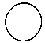

The Unitive State in the Upanishads
Professor Andrew Wilson
Unification Theological Seminary
(World Scripture: A Comparative Anthology of Sacred Texts)

That which is the finest essence--this whole world has that as its Self. That is Reality. That is the Self. That art thou.
Brahman is the end of the journey. Brahman is the supreme goal.
Cf. Brihadaranyaka Upanishad 4.4.6-7
Whatever is here, that is there.
What is there, that again is here.
He obtains death after death
Who seems to see a different here.By the mind, indeed, is this realization to be attained:
There is no difference here at all!
He goes from death to death
Who seems to see a difference here.
Cf. Chandogya Upanishad 7.23, Lankavatara Sutra 78, ; Mulamadhyamakakarika 25, ; Chuang Tzu 2,
Those who see all creatures within themselves
And themselves in all creatures know no fear.
Those who see all creatures in themselves
And themselves in all creatures know no grief.
How can the multiplicity of life
Delude the one who sees its unity?
Cf. Chandogya Upanishad 7.23, ; 7.25.2, ; Chuang Tzu 22,
Meditate upon him and transcend physical consciousness. Thus will you reach union with the Lord of the universe. Thus will you become identified with him who is One without a second. In him all your desires will find fulfillment.
The truth is that you are always united with the Lord. But you must know this.
Cf. Bhagavad Gita 5.24, Isha Upanishad 15-16,
As rivers flow into the sea and in so doing lose name and form, so even the wise man, freed from name and form, attains the Supreme Being, the Self-luminous, the Infinite. He who knows Brahman becomes Brahman.
Cf. Chandogya Upanishad 7.23, 27, ; Katha Upanishad 3.13,; Maru Ashpadi,

| Upanishads |
World
Scripture: A Comparative Anthology of Sacred Texts, Ed. Andrew Wilson
Mysticism |
 Unitive State |